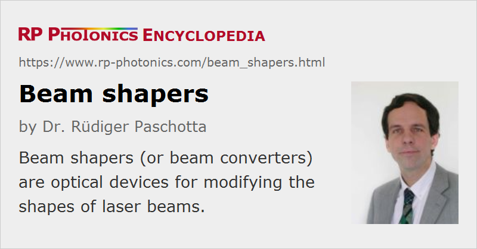

Beam Shapers
Definition: optical devices for modifying the shapes of laser beams
Alternative term: beam converters
German: Strahlformer
How to cite the article; suggest additional literature
Author: Dr. Rüdiger Paschotta
In general, a beam shaper (or beam converter) is an optical device which somehow reshapes a light beam, i.e., it modifies its spatial profile. For example, there are refractive and microoptic beam shapers which create a flat-top (top-hat) beam from a Gaussian input beam.
Another kind of beam shaper is often used in conjunction with a high-power laser diode, for example with a diode bar, in order to make both its beam radius and beam quality more symmetric with respect to two orthogonal directions. This facilitates e.g. launching the beam into an optical fiber with a circular cross-section, or pumping a solid-state gain medium. A popular type of device, which is based on two highly reflective mirrors and largely preserves the brightness, is described in Ref. [2]. Other devices are based on micro-optical structures, for example containing arrays of small prisms, to perform a similar function with a smaller device. Originally, such brightness-preserving beam shapers were applied to diode bars, but they can equally well be used with diode stacks.
Note that it would not be sufficient simply to use a combination of cylindrical lenses so as to achieve equal spot sizes in both directions; the beam qualities and thus the beam divergence angles in both directions would then remain very different. If a circular focus is formed in that way, the beam divergence at least in one direction is much larger than achievable with a beam shaper.
There are other devices performing essentially the same function with other means, e.g. with diffractive microoptics or with fiber bundles. In the latter case, the outputs of individual emitters of a diode bar are coupled into separate fibers of a bundle, which are arranged in a linear array on the side of the diode bar, but as a circular array on the output end.
Other beam shapers perform different functions. For example, there are devices for correcting the “smile” of diode bars [4].
Finally, there are beam homogenizers for making its intensity distribution more uniform.
Suppliers
The RP Photonics Buyer's Guide contains 28 suppliers for beam shapers. Among them:
Questions and Comments from Users
Here you can submit questions and comments. As far as they get accepted by the author, they will appear above this paragraph together with the author’s answer. The author will decide on acceptance based on certain criteria. Essentially, the issue must be of sufficiently broad interest.
Please do not enter personal data here; we would otherwise delete it soon. (See also our privacy declaration.) If you wish to receive personal feedback or consultancy from the author, please contact him e.g. via e-mail.
By submitting the information, you give your consent to the potential publication of your inputs on our website according to our rules. (If you later retract your consent, we will delete those inputs.) As your inputs are first reviewed by the author, they may be published with some delay.
Bibliography
| [1] | J. R. Leger and W. C. Goltsos, “Geometrical transformation of linear diode-laser arrays for longitudinal pumping of solid-state lasers”, IEEE J. Quantum Electron. 28 (4), 1088 (1992), doi:10.1109/3.135232 |
| [2] | W. A. Clarkson and D. C. Hanna, “Two-mirror beam-shaping technique for high-power diode bars” (reflective beam shaper for symmetrizing the beam quality and preserving the brightness), Opt. Lett. 21 (6), 375 (1996), doi:10.1364/OL.21.000375 |
| [3] | A. von Pfeil, “Beam shaping of broad area diode lasers: principles and benefits”, Proc. SPIE 4648, 82 (2002), doi:10.1117/12.462645 |
| [4] | J. F. Monjardin et al., “Correction of beam errors in high-power laser diode bars and stacks”, Opt. Express 14 (18), 8178 (2006), doi:10.1364/OE.14.008178 |
| [5] | X. Gu et al., “All-fiber laser beam shaping using a long-period grating”, IEEE Photon. Technol. Lett. 20 (13), 1130 (2008), doi:10.1109/LPT.2008.924640 |
See also: laser beams, beam homogenizers, beam quality, flat-top beams, laser diodes, diode bars, diode stacks, brightness, The Photonics Spotlight 2010-04-08
and other articles in the category photonic devices
|  |
If you like this page, please share the link with your friends and colleagues, e.g. via social media:
These sharing buttons are implemented in a privacy-friendly way!